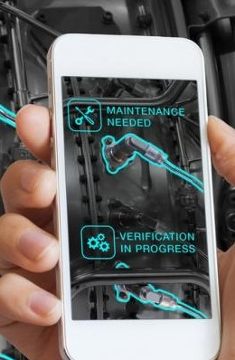

O que é realidade aumentada?
Publicado por Richard Macedo
18/03/2023 - 16:32
Realidade aumentada (RA) é uma tecnologia que combina o mundo real com elementos virtuais, criando uma experiência interativa e imersiva para o usuário. A RA usa uma câmera ou dispositivo móvel para capturar imagens do mundo real e, em seguida, sobrepoem essas imagens com elementos virtuais, como gráficos 3D, texto ou imagens em movimento. Diferente da realidade virtual, que cria um ambiente completamente digital, a RA permite que o usuário interaja com o mundo real enquanto visualiza elementos virtuais. A RA tem sido usada em diversos campos, incluindo publicidade, entretenimento, jogos, medicina, educação e arquitetura. Alguns exemplos de aplicações de RA incluem: Jogos: A RA pode ser usada em jogos para criar experiências interativas, permitindo que os jogadores interajam com personagens virtuais e objetos em um ambiente real. Publicidade: A RA pode ser usada em campanhas publicitárias para criar experiências imersivas e interativas para os consumidores, permitindo que eles visualizem produtos em um ambiente real e interajam com elementos virtuais. Educação: A RA pode ser usada na educação para criar experiências de aprendizagem mais interativas e envolventes, permitindo que os alunos visualizem objetos em 3D e interajam com elementos virtuais. Medicina: A RA pode ser usada na medicina para ajudar os médicos a visualizarem o interior do corpo humano em 3D, permitindo que eles identifiquem anomalias com mais precisão. Esses são apenas alguns exemplos das muitas aplicações da RA. A tecnologia continua a evoluir e tem um grande potencial para transformar a forma como as pessoas interagem com o mundo ao seu redor.



.png)